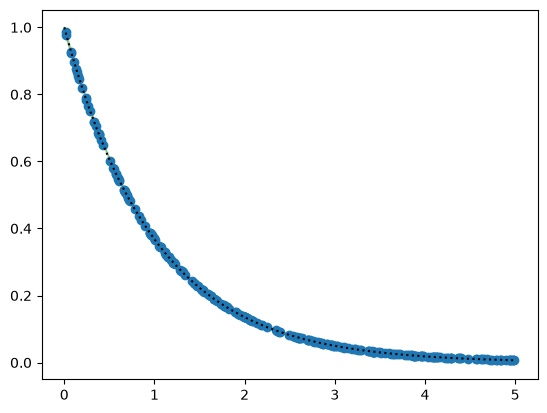
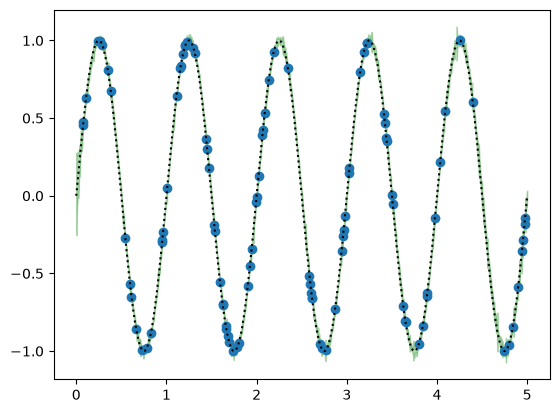
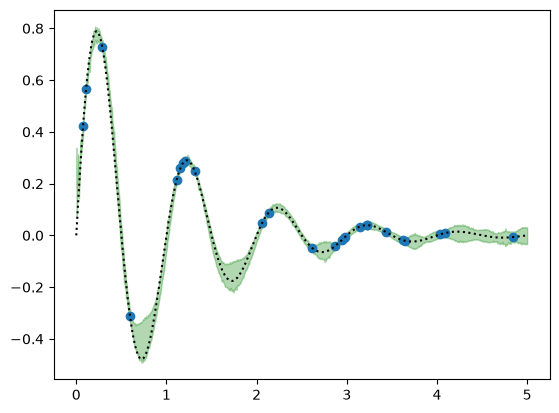

Multifidelity Surrogate Modeling#
We provide a quick overview of some of the surrogate modeling applications included in elyza.
Multifidelity-Augmented Gaussian Process Inputs (MAGPI)#
See the MAGPI paper by Rex, Qian, & Peterson (2026) for a full overview of the algorithm.
We now demonstrate a simple analytical implementation of the MAGPI algorithm. We first instatiate a 1d input and evaluators for three levels of fidelity.
from elyza.util.imports import *
from elyza.core.random import Uniform
from elyza.core.evaluator import Evaluator
x = Uniform(
name = "x",
dim = 1,
lower = 0.0,
upper = 5.0
)
hf_evaluator = Evaluator(
name = "High-Fidelity",
inputs = [x],
output_dim = 1,
evaluation_func = jit(
lambda x: jnp.exp(-x) * jnp.sin(2*pi*x)
),
jit_compile = True
)
mf_evaluator = Evaluator(
name = "Medium-Fidelity",
inputs = [x],
output_dim = 1,
evaluation_func = jit(
lambda x: jnp.sin(2*pi*x)
),
jit_compile = True
)
lf_evaluator = Evaluator(
name = "Low-Fidelity",
inputs = [x],
output_dim = 1,
evaluation_func = jit(
lambda x: jnp.exp(-x)
),
jit_compile = True
)
Once we instantiate the evaluator, we instantiate surrogate models to emulate each level of fidelity.
from elyza.multifidelity.surrogate import MAGPI
from elyza.surrogate.gp import GaussianProcess, ARD, Linear, Constant
from elyza.optim import ADAM, ADAMOptions
from elyza.surrogate import SupervisedDataset
from elyza.util.imports import *
from matplotlib.pyplot import *
# declaring the ADAM optimizer options
adam_opts = ADAMOptions(
lr = 5e-1,
epochs = 1000,
batch_size = None,
beta1 = 0.9,
beta2 = 0.999,
active_params = {'mean':True, 'kernel':True, 'noise':False},
constraints = None,
verbose = False,
eps = 1e-8,
random_state = 42,
unroll = 25
)
# building the lowest-fidelity GP
lf_inputs = x.sample(jrand.PRNGKey(42), 250)
lf_outputs = lf_evaluator.evaluate(lf_inputs)
lf_data = SupervisedDataset(
input_data = [lf_inputs],
output_data = lf_outputs,
noise_var = 1e-4
)
lf_gp = GaussianProcess(
input_dim = 1,
kernel_cls = ARD,
mean_cls = Constant,
noise_var = lf_data.noise_var,
eps = 1e-12,
max_cond = 1e5,
verbose = False,
calibrate_noise = True
)
lf_gp.set_optimizer(ADAM, adam_opts)
# building the medium-fidelity gp
mf_inputs = x.sample(jrand.PRNGKey(42), 100)
mf_outputs = mf_evaluator.evaluate(mf_inputs)
mf_data = SupervisedDataset(
input_data = [mf_inputs],
output_data = mf_outputs,
noise_var = 1e-4
)
mf_gp = GaussianProcess(
input_dim = 2,
kernel_cls = ARD,
mean_cls = Constant,
noise_var = mf_data.noise_var,
eps = 1e-12,
max_cond = 1e5,
verbose = False
)
# constraint set to zero out the input part of the linear mean parameters
mf_gp.set_optimizer(ADAM, adam_opts)
hf_inputs = x.sample(jrand.PRNGKey(42), 25)
hf_outputs = hf_evaluator.evaluate(hf_inputs)
hf_data = SupervisedDataset(
input_data = [hf_inputs],
output_data = hf_outputs,
noise_var = 1e-4
)
hf_gp = GaussianProcess(
input_dim = 3,
kernel_cls = ARD,
mean_cls = Constant,
noise_var = hf_data.noise_var,
eps = 1e-12,
max_cond = 1e5,
verbose = False,
calibrate_noise = True
)
hf_gp.set_optimizer(ADAM, adam_opts)
Next, we declare the MAGPI model and set the surrogate for each level of fidelity:
magpi = MAGPI(
data = [lf_data, mf_data, hf_data],
evaluators = [lf_evaluator, mf_evaluator, hf_evaluator]
)
# setting the surrogates for each level with prediction keyword arguments
magpi.set_surrogate(
level = 0,
surrogate = lf_gp,
full_cov = False
)
magpi.set_surrogate(
level = 1,
surrogate = mf_gp,
full_cov = False
)
#
magpi.set_surrogate(
level = 2,
surrogate = hf_gp,
full_cov = False
)
Once the surrogates have been linked to the MAGPI model, we then fit each level of fidelity starting from level 0 (lowest-fidelity).
# number of posterior samples used to estimate the mean/confidence band
n_samples = 500
magpi.fit(0)
figure()
x_test = jnp.linspace(0,5,1000).reshape(-1,1)
samples = magpi.sample(x_test, key = jrand.PRNGKey(0), level = 0, n_points = n_samples)
ymean = samples.mean(axis=1)
yconf = 2 * samples.std(axis=1)
ytrue = lf_evaluator.evaluate(x_test)
fill_between(x_test.ravel(), (ymean - yconf).ravel(), (ymean + yconf).ravel(), alpha = 0.3, color = 'green')
plot(x_test.ravel(), ytrue.ravel(), linestyle = 'dotted', color = 'black')
scatter(lf_inputs.ravel(), lf_outputs.ravel())
show()

We then fit the medium-fidelity surrogate:
magpi.fit(1)
figure()
x_test = jnp.linspace(0,5,1000).reshape(-1,1)
samples = magpi.sample(x_test, key = jrand.PRNGKey(1), level = 1, n_points = n_samples)
ymean = samples.mean(axis=1)
yconf = 2 * samples.std(axis=1)
ytrue = mf_evaluator.evaluate(x_test)
fill_between(x_test.ravel(), (ymean - yconf).ravel(), (ymean + yconf).ravel(), alpha = 0.3, color = 'green')
plot(x_test.ravel(), ytrue.ravel(), linestyle = 'dotted', color = 'black')
scatter(mf_inputs.ravel(), mf_outputs.ravel())
show()

Lastly, we fit the high-fidelity surrogate
magpi.fit(2)
figure()
x_test = jnp.linspace(0,5,1000).reshape(-1,1)
samples = magpi.sample(x_test, key = jrand.PRNGKey(2), level = 2, n_points = n_samples)
ymean = samples.mean(axis=1)
yconf = 2 * samples.std(axis=1)
ytrue = hf_evaluator.evaluate(x_test)
fill_between(x_test.ravel(), (ymean - yconf).ravel(), (ymean + yconf).ravel(), alpha = 0.3, color = 'green')
plot(x_test.ravel(), ytrue.ravel(), linestyle = 'dotted', color = 'black')
scatter(hf_inputs.ravel(), hf_outputs.ravel())
show()
